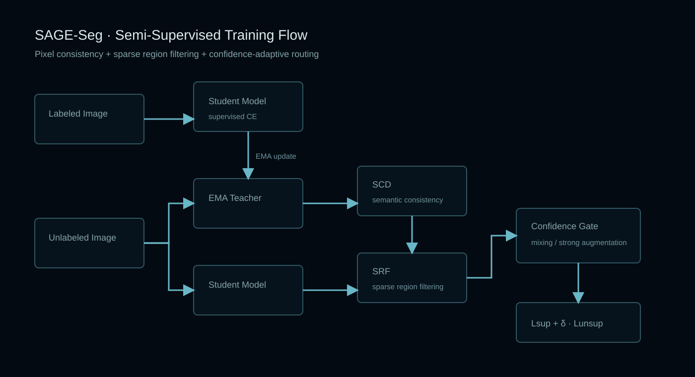

Semi-supervised Segmentation · PyTorch
SAGE-Seg
Semantic-aware gated enhancement for semi-supervised segmentation.
A compact teacher-student EMA framework that improves unlabeled-data utilization at pixel, region and sample levels.
TaskSemantic segmentation
ModelDeepLabV3+ / ResNet-101
DatasetsVOC 2012 · Cityscapes
TrainingTeacher–student EMA
Training architecture

Architecture / Core modules
Sparse Region Filtering
Confidence Gate
EMA Teacher
Weak / strong augmentation
mIoU evaluation
End-to-end flow
01Weak unlabeled views
02Teacher pseudo-labels
03Semantic consistency mask
04Sparse region filtering
05Confidence routing
06Supervised + unsupervised loss
Source code, configuration, training or runtime instructions and implementation notes are maintained in the repository.
Open SAGE-Seg on GitHub ↗